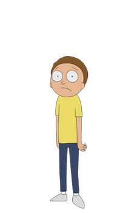

Ричард "Рик" Санчес
Один из главных героев шоу, чьё имя упомянуто в его названии. Он - учёный гений, страдающий алкоголизмом, также очень опрометчив, социопат, чьё поведение заставляет нервничать свою дочь по поводу безопасности её сына, Морти.
Мортимер "Морти" Смит-старший
Один из двух главных героев одноимённого шоу – «Рик и Морти». Он является внуком Рика и часто вынужден сопровождать его в различных приключениях. Морти учится в средней школе Гарри Херпсона вместе со своей старшей сестрой, Саммер.
Саммер Смит
Является второстепенным персонажем в мультсериале - «Рик и Морти», а также старшей родной сестрой Морти. Саммер посещает среднюю школу Гарри Херпсона вместе с Морти. Она типичная девочка-подросток, считающая свою семейную жизнь неблагополучной.
Ричард Джеральд "Джерри" Смит
Является второстепенным персонажем мультсериала «Рик и Морти». Он неуверенный в себе отец Морти, который решительно осуждает влияние Рика на своего сына. Наряду с этим его брак с женой Бет подвергнут опасности из-за её тесной связи с отцом, с которой он пытается бороться. Он работает во второсортном рекламном агентстве, из-за чего часто сидит без работы.
Бет Смит
Является дочерью Рика, женой Джерри и матерью Морти и Саммер. Ханжа и больше других борется с эгом своего мужа, частично благодаря тому, что она чувствует себя выше Джерри, из-за влияния Рика на её чувство превосходства.